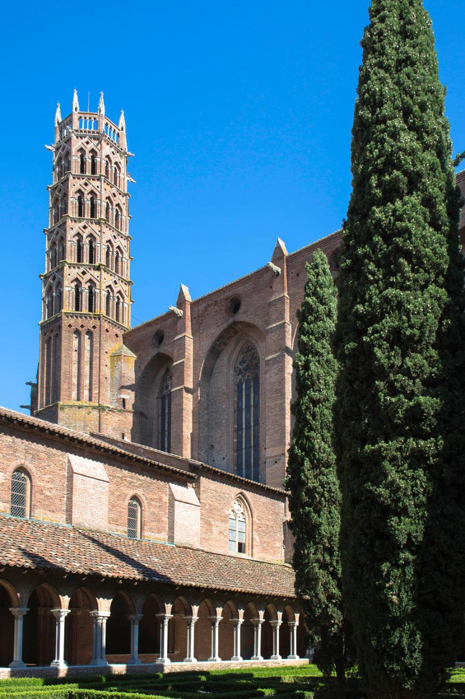
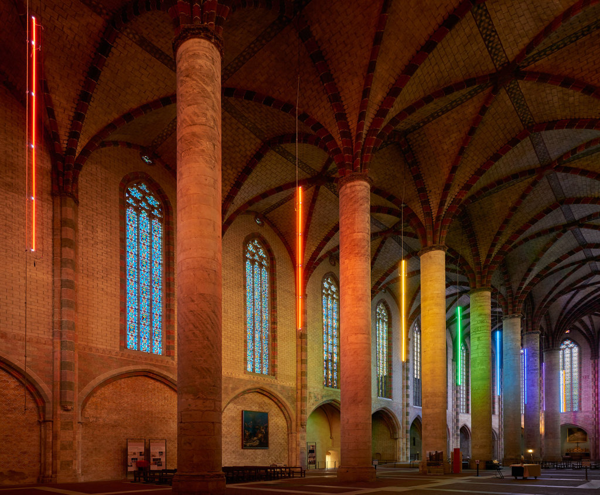
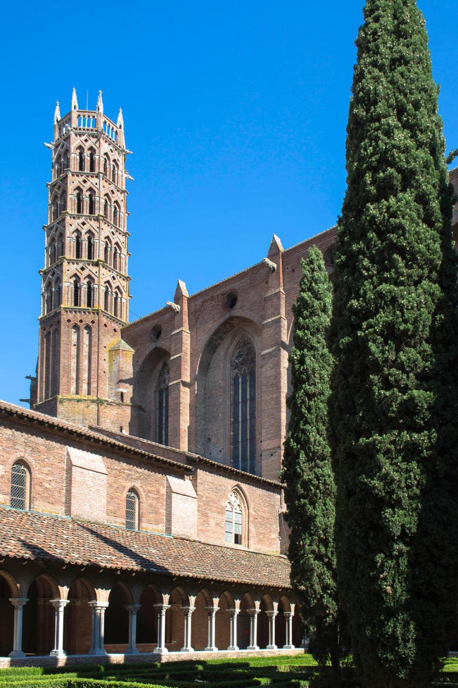
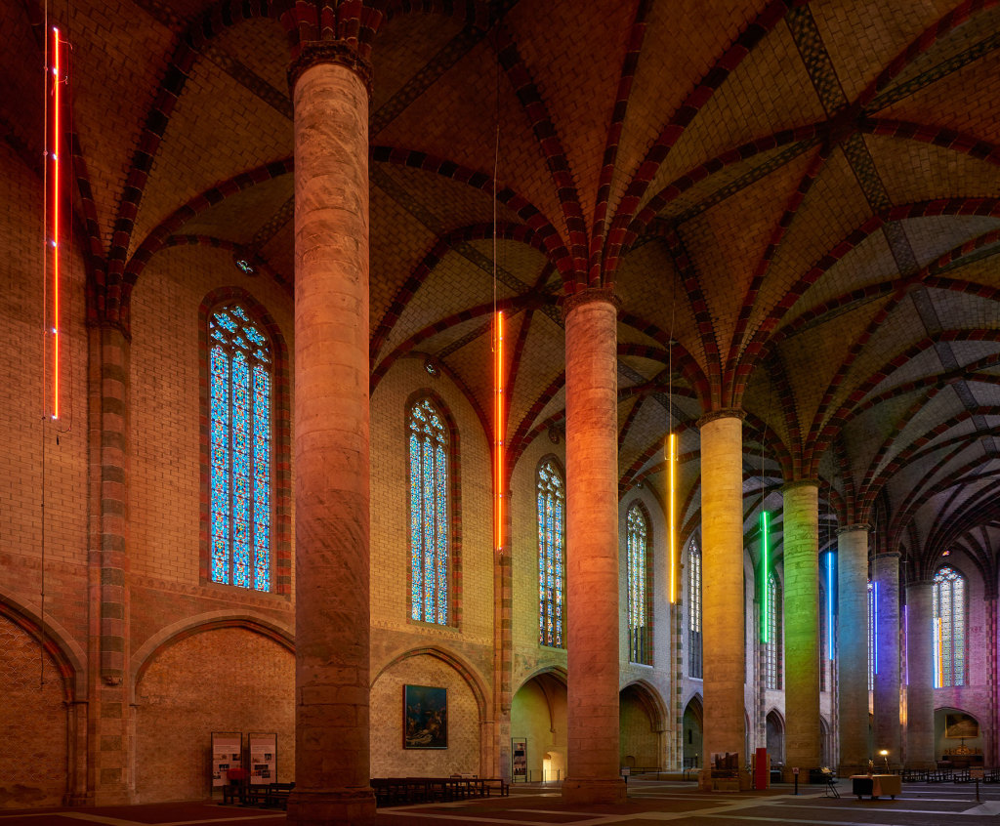

PLACE DU CAPITOLE
Cette place emblématique de Toulouse doit son nom au conseil des capitouls, conseil municipal de l'époque. Ils mettent en place en 1676 un projet de grande place royale au centre de Toulouse, malgré des difficultés administratives, c'est avec un certain retard que les travaux démmarent en 1750. Apres divers chagements de nom, la place du Capitole voit le jour en 1848. Aujourd'hui encore, la place du Capitole reste un lieu préservé témoignant de l'histoire toulousaine ainsi que de sa culture, elle est aussi un lieu de festivité lors de la fête de la musique, les expositions ou une autre victoire du Stade Toulousain.
QUAI DE LA DAURADE
Le quai de la daurade est une voie du centre historique de Toulouse, elle tient son nom du monastère bénédictin qui se trouvait là jadis. En 1766 les Etats de Languedoc décident d'aménager des berges au bord de la Garonne et rasent les batiments qui s'y trouvent. Ajourd'hui c'est un espace convivial et tres prisé par les toulousains nocturnes. En effet, le quai est un endroit tres festif et permet de rejoindre la place St-Pierre, connue pour ses nombreux bars et son ambiance toute particulière.
PRAIRIE DES FILTRES
Jusqu'au début du XVe siècle, l'emplacement de la prairie des filtres était urbanisé, mais une crue très importante en 1430 ravagea le quartier Saint Cyprien, ne laissant que des ruines derrière elle. Une autre crue en 1437 acheva de décourager les habitants de Saint Cyprien de se réinstaller à cet endroit. Le grand atterrissement formé sur la rive gauche du "coude garonnais" n'était à l'origine qu'une île marécageuse et dénuée d'intérêt, jusqu'à ce que le sable s'y déposant de siècle en siècle la rattache à la rive.
La prairie doit son nom aux galeries filtrantes utilisées pour purifier l'eau boueuse pompée dans la Garonne et amenée ainsi assainie jusqu'au château d'eau de Toulouse. Le vaste espace qui s'était ainsi créé fut le lieu privilégié de nombreuses manifestations populaires et sert encore aujourd'hui pour des evenements sportifs et musicaux.

BAZACLE
Ancien port situé au centre de Toulouse sur la Garonne à l’époque romaine, il était un point stratégique de la ville. Au cours du Moyen Age, les hommes traversaient le fleuve à ce niveau de part sa profondeur naturellement faible. Il fit l’un des points de passages majeurs de la Garonne entre l’époque romaine et le Moyen Age.
C’est réellement à la fin du XIII siècle que le Bazacle fut construit. En raison de sa géolocalisation, des moulins ont été construits (céréaliers dans un premier temps puis pasteliers, à papiers, à poudres, des tanneries). Par la suite, des huileries, des amidonneries et des fabriques d’outillage et la manufacture de tabacs y sont construites. Au cours du Moyen Age jusqu’au XIX siècle, les moulins du Bazacle alimentent en majorité la ville de Toulouse et des exportations sont faites par la Garonne.
A la fin du XIX, la rentabilité des moulins décroît. Ils sont donc convertis en une centrale hydro-éléctrique afin de fournir de l’énergie pour l’éclairage public du centre de Toulouse. A la fin des années 1980, le bâtiment historique accueille des expositions artistiques et culturelles. Une nouvelle passe à poissons facilite désormais la tâche aux saumons, truites de mer en route vers l’amont.
Rénové en 2009, le Bazacle abrite toujours une centrale hydro-éléctrique en activité. Une partie est dédié aux énergies renouvelables, aux enjeux liés à l’eau, à la Garonne et sa faune et sa flore. L’autre partie est ouverte au public et se visite.

Envie de visiter ce monument historique ? Plus d’informations sur :
https://www.edf.fr/
MUSEE ST RAYMOND
À la fois un musée et un site archéologique le musée st Raymond est un musée d’archéologie qui a été classé monument historique en 1975. Il a été ouvert en 1892 et était à l’origine un collège universitaire construit en 1523 qui était destiné à accueillir des étudiants venus à Toulouse afin d’y étudier le droit, la théologie, la médecine... Le musée st Raymond est l’un des rares exemples conservés de l'architecture universitaire médiévale toulousaine. Avec sa collection de plus de 1 000 pièces évoquant le cadre de vie des Celtes et des Romains dans la région toulousaine il est le deuxième musée de France(le premier est le Louvre à Paris) à posséder la plus grande collection de sculptures romaines. Le musée est actuellement composé de deux étages et d’un sous-sol. Au sous-sol nous pouvons avoir accès à des sarcophages sculptés et des vestiges dégagés lors de fouilles : un four à chaux et une partie d’un cimetière de la fin de l’antiquité. Le rez-de-chaussée sert d’accueil aux expositions temporaire dans l’ancien tinel qui est la salle d’honneur où se réunissait la communauté des étudiants. Au premier étage se trouvent des œuvres provenant de Matres-Tolosane (village se situant à quelques kilomètres de Toulouse) et principalement des sculptures romaines. Quant au dernier étage il est consacré à la cité romaine Tolosa.
COUVENT DES JACOBINS
Le couvent des Jacobins est un lieu de pèlerinage qui attire chaque année plus de 350 000 visiteurs. Il a été construit entre 1230 et 1350 et fut par la suite agrandi. Le couvent est constitué d'un cloître, d'une salle capitulaire, d'un réfectoire et d'une chapelle et se situe au centre-ville en face du lycée Pierre-de-Fermat. Le couvent a été construit par l’ordre des prêcheurs connus sous les noms de Jacobins qui est un ordre catholique appartenant à la catégorie des ordres mendiants. Les bâtiments du couvent sont considérés comme étant des joyaux de l’art gothique languedocien en matière de construction monastique des 13ème et 14ème siècle.
 



JARDIN DES PLANTES
Le jardin des plantes est le plus ancien des jardins de Toulouse il était à l’origine un jardin botanique qui a été créer en 1730 par la société des sciences de Toulouse et qui permettait aux étudiants en médecine de se fournir en plantes médicinales. Il se situait à cette époque dans le quartier saint-sernin. À cause d’un sol juger de pas assez bonne qualité et d’un manque de place le jardin des plantes a été déplacer plusieurs fois. C’est en 1794 que par la volonté de Philippe Picot de Lapeyrouse le jardin est déplacé à son endroit actuel. Il finit par devenir public en 1887 lorsqu’il est transformé pour l’exposition internationale de cette année. De nos jours le jardin des plantes est donc un parc public de 7 hectares qui se trouve au sud-ouest du centre-ville. Le parc contient énormément de diversité. On compte près de 600 espèces botaniques dont certaines sont exotiques, rares ou de collection. Le parc comprend aussi beaucoup d’animaux en liberté tel que des canards, des cygnes, des écureuils, des paons, … Il est aussi doté d’une aire de jeu pour les enfants comprenant un toboggan et mur d’escalade.
PLACE WILSON
La place Wilson tient son nom du 28ème président des États-Unis Thomas Woodrow Wilson qui a été un acteur important lors de la 1re guerre mondiale en tant qu’allié de la France. La place est considérée comme monument historique depuis 1974. C’est l’un des endroits les plus emblématiques et fréquentés de la ville notamment due à son positionnement mais aussi grâce à ses magasins, ses brasseries, son cinéma… La place est aussi dotée d’une fontaine où se trouve depuis 1908 la statue de Pierre Godolin qui était un poète occitan né à Toulouse et qui s’est fait connaître durant le 17ème siècle ainsi que d’un manège pour les enfants.
ALLEES JULES-GUESDE
es Allées Jules-Guesde ont été crée au milieu du 18ème siècle. Au début ces allées avaient pour nom l’esplanade puis ont changé de nom durant la Révolution française en 1793 pour allée des récompenses dû au fait de leurs utilisations lors des grandes cérémonies républicaines.
Ensuite elles ont de nouveau changé de nom en 1806 et ont été appelé allée Saint-Michel car elle longeait ce quartier. Et c’est finalement le 28 juillet 1933 que ces allées changèrent de nom une dernière fois et finirent par s’appeler Allées Jules-Guesde. Ce dernier changement est dû à la volonté de la municipalité socialiste d’Étienne Billière de rendre hommage à Jules Guesde (de vrai nom Jules Bazile) qui était républicain et journaliste à Toulouse en 1868 où il écrivait dans le « progrès libéral » qui était un journal quotidien crée cette même année et qui après s’être orienté vers le socialisme révolutionnaire fut fut poussé à l’exil où il adhère à la première internationale(l’Association internationale des travailleurs). Il revient en France en 1876 et fonde en 1882 le Parti ouvrier français(premier parti marxiste en France) et finit par être élu à la chambre des députés en 1893. Depuis 1933 les allées gardèrent ce nom jusqu’à aujourd’hui sauf entre 1940 et 1944 sous la municipalité vichyste où elles reprirent leur ancien nom. Le sol des Allées Jules-Guesde est protégé depuis 1933 par une inscription sur la liste des sites classés.
MUSEE DES AUGUSTINS
Suite à la demande de plusieurs professeurs de l’Académie Royale de peinture et de sculpture désirant l’ouverture d’un musée pour y mettre les chefs-d’œuvre toulousains à l'abri de la vindicte des révolutionnaires et du pillage. Il a été décidé en 1793 par le conseil départemental la création du Museum provisoire du Midi de la République qui ouvrit en 1795 dans l’église des Augustins ce qui fait de lui l’un des plus vieux musées de France. Les collections du musée comptent plus de 4000 pièces de peintures et de sculpture datant du début du moyen âge aux années 1940. Ces collections se sont formées grâce au reversement de fond de l’ancienne académie royale de peinture et de sculpture créée en 1750, des saisies révolutionnaires et des œuvres de nombreux édifices religieux détruits au 19ème siècle.